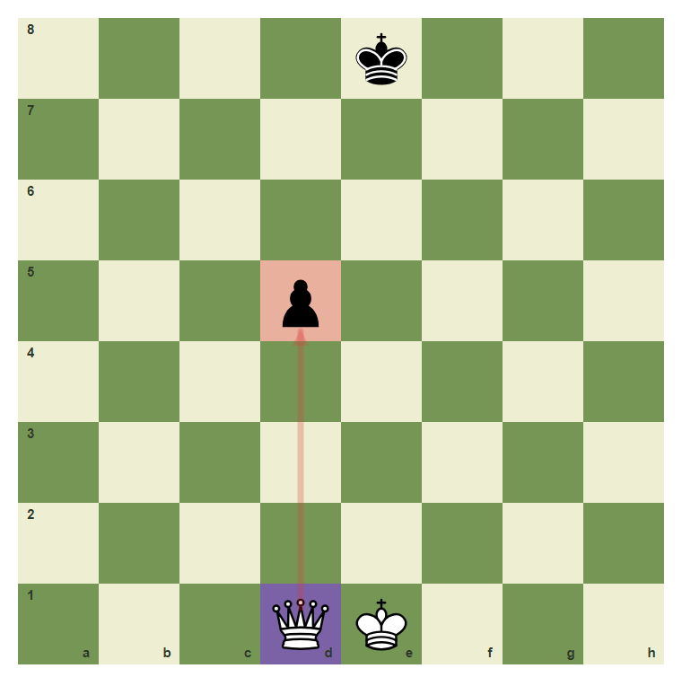
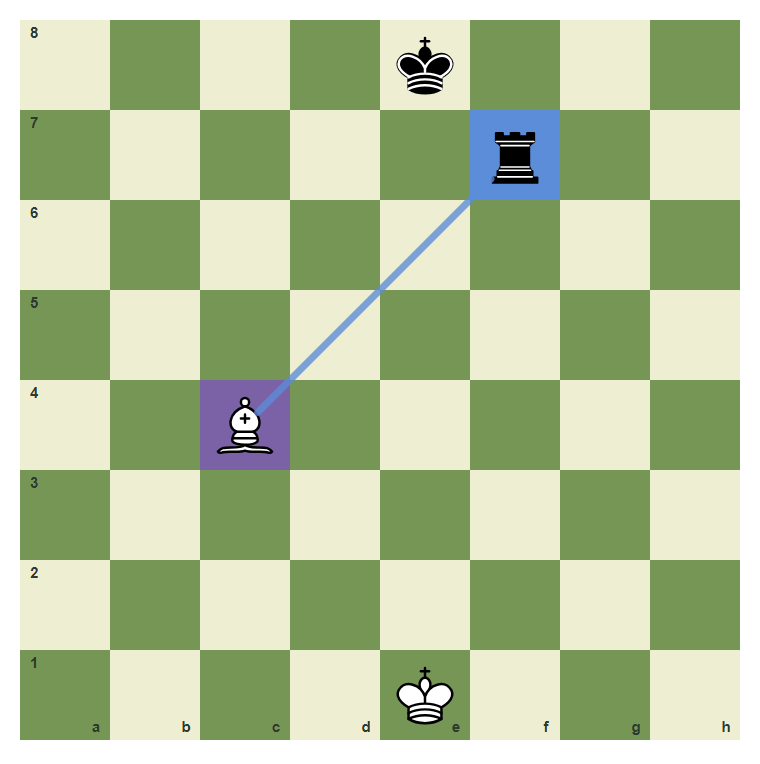
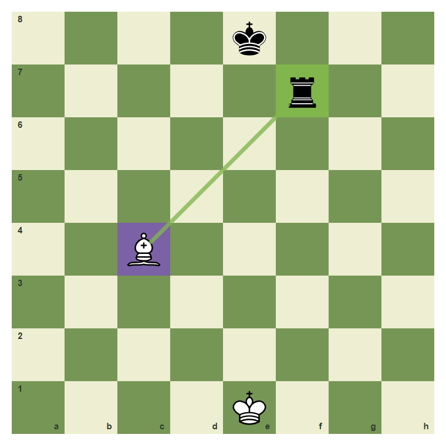
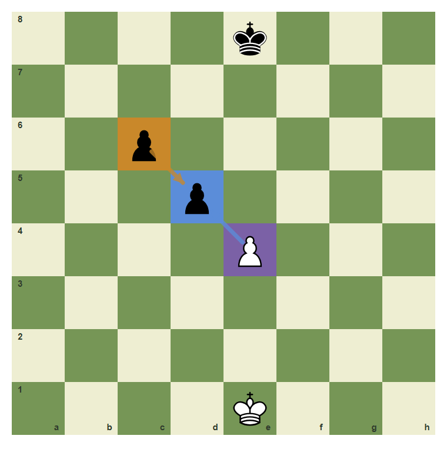
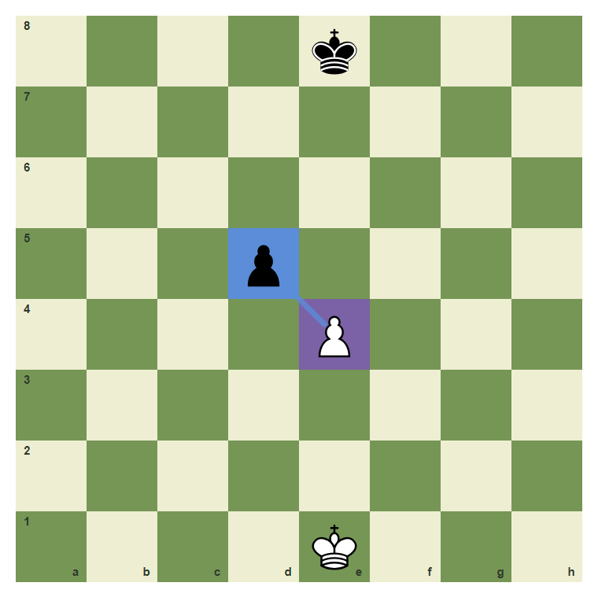
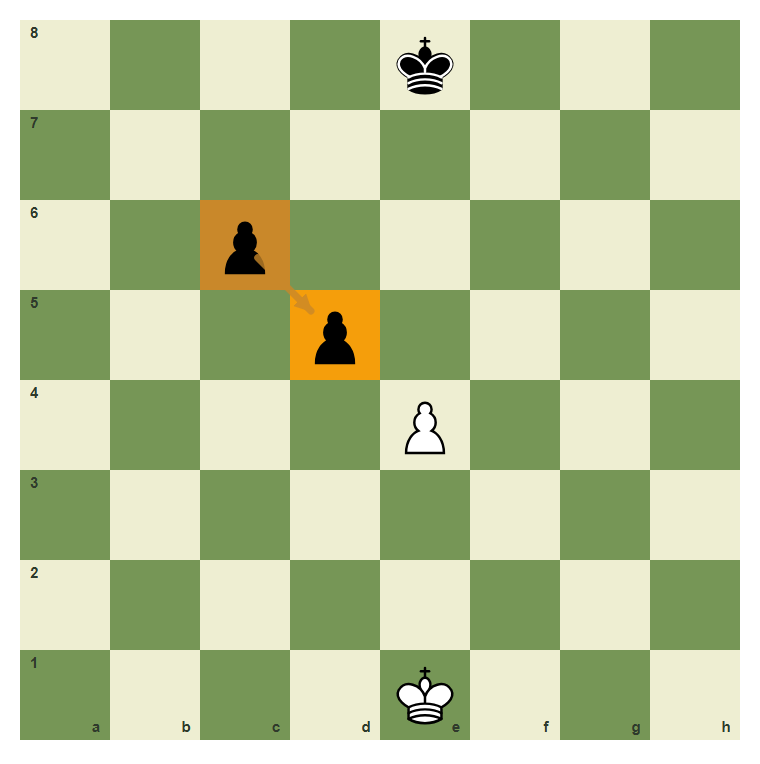

Capturing Wisely: Good Trades And Bad Trades
Use value and safety before every capture.
- Compare simple material values.
- Separate winning material from equal trades.
- Notice recaptures before taking.
A Capture Is A Decision
Captures feel satisfying, but not every capture is good. Ask: what do I win, what can recapture me, and what is the value exchange?
A simple pawn capture

The e4 pawn can capture d5. Pawns often trade evenly.
Do not risk a queen for a pawn

The pawn on d5 is small. A queen move to d5 must be checked for danger.
A bishop can win a rook

The bishop on c4 can capture the rook on f7.
Count value before capture

Bishop for rook is usually profitable because rook value is higher.
Look for the recapture

After e4xd5, the c6 pawn may recapture. Notice the second move.
Make the equal pawn capture
Capture from e4 to d5.

Common mistake: forget the recapture
If another pawn can recapture, the first capture may only be a trade.

The c6 pawn points back to d5.
Chapter Checkpoint
Before a capture, ask what can:
Before a capture, ask what can:
Winning a rook for a bishop is usually:
Winning a rook for a bishop is usually:
A pawn capture may simply be:
A pawn capture may simply be: